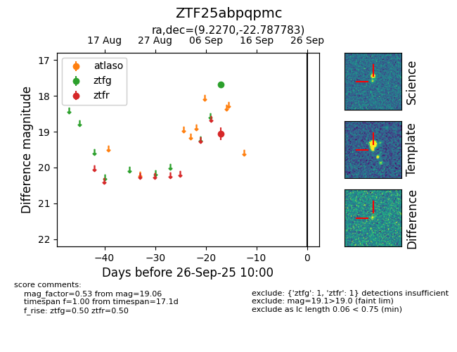

FINK: ZTF25abpqpmc
Lasair: ZTF25abpqpmc
ALeRCE: ZTF25abpqpmc
ZTF25abpqpmc (ztf,fink)
equatorial (ra, dec) = (9.2270,-22.78778)
galactic (l, b) = (84.9600,-84.55242)

last ztfg=17.68, ztfr=19.06
1 ztfg, 1 ztfr detections